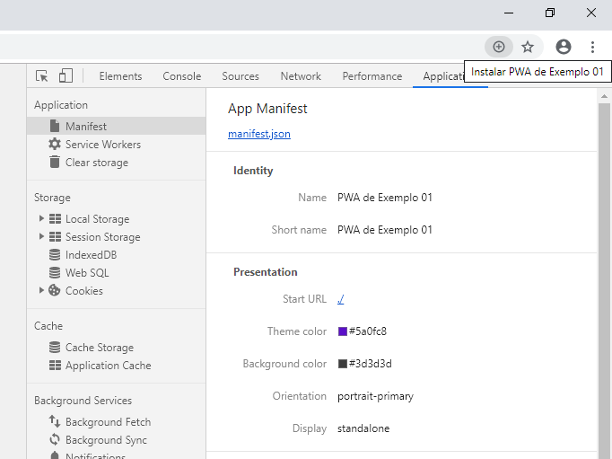

PWA de Exemplo 01
Este primeiro exemplo de PWA é muito simples e contém o mínimo necessário. Ele é tão minimalista que sequer funciona corretamente offline, apesar de possuir um Service Worker.
Por definição, se não não funciona corretamente offline, nem deveria ser efetivamente considerado um PWA, já que um PWA deve funcionar, mesmo que minimamente, não importando o estado da rede... Mas o nagevador acredita que estamos fazendo nosso trabalho direitinho! 😉
Se estivermos utilizando o Chrome 78, é possível saber se tudo deu certo caso o navegador nos ofereça a opção de instalar o aplicativo, além de não aparecerem alertas no item Manifest da aba Application.
Pontos Importantes
É graças aos pontos abaixo que o navegador entende que esta página se trata, na verdade, de um PWA:
- Página servida via HTTPS (ou a partir de localhost / 127.0.0.1).
-
Presença do manifesto dentro da <head>:
<link rel="manifest" href="manifest.json" /> -
Registro do Service Worker via código JavaScript (mais informações sobre o método na MDN):
navigator.serviceWorker.register("sw.js"); - Service Worker tratando, mesmo que minimamente, os eventos install e fetch.
Cuidado!
Não se esqueça de validar a existência do Service Worker no navegador antes de efetuar seu registro!
if ("serviceWorker" in navigator)
navigator.serviceWorker.register("sw.js");
Observe como as mensagens emitidas pelo Service Worker não aparecem no console na primeira vez que abrimos a página, mas aparecem em todas as próximas vezes. Isso ocorre porque na primeira vez que a página foi aberta o Service Worker ainda não havia sido instalado/ativado. Se você não reparou nisso, remova o Service Worker através das ferramentas de desenvolvimento, e recarregue a página 😁!
O código-fonte e as explicações podem ser encontradas no GitHub do projeto: github.com/tech-espm/labs-pwa 😊.